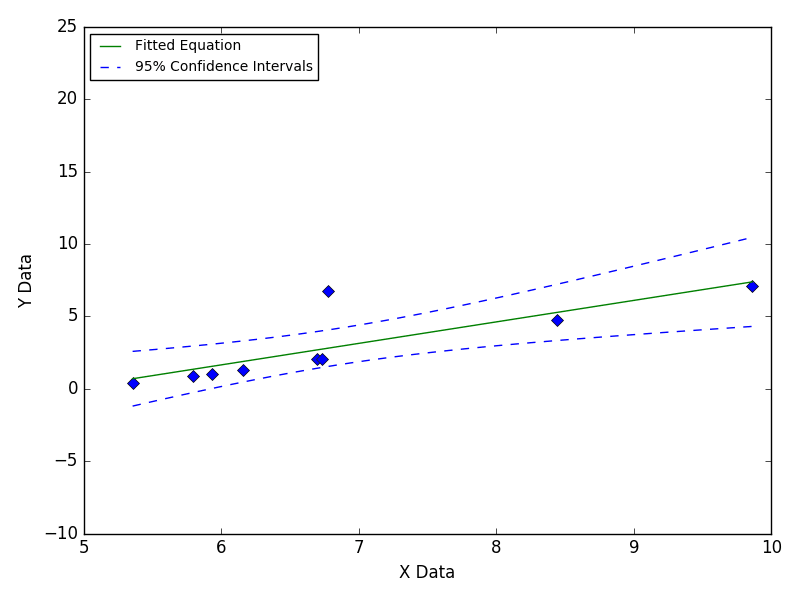
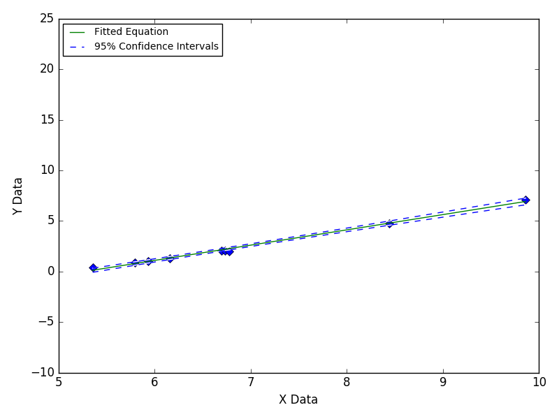
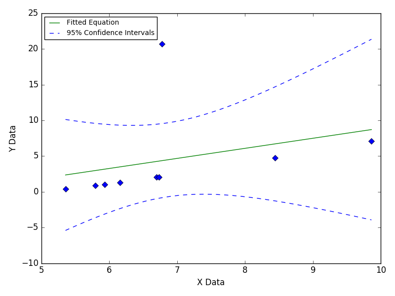
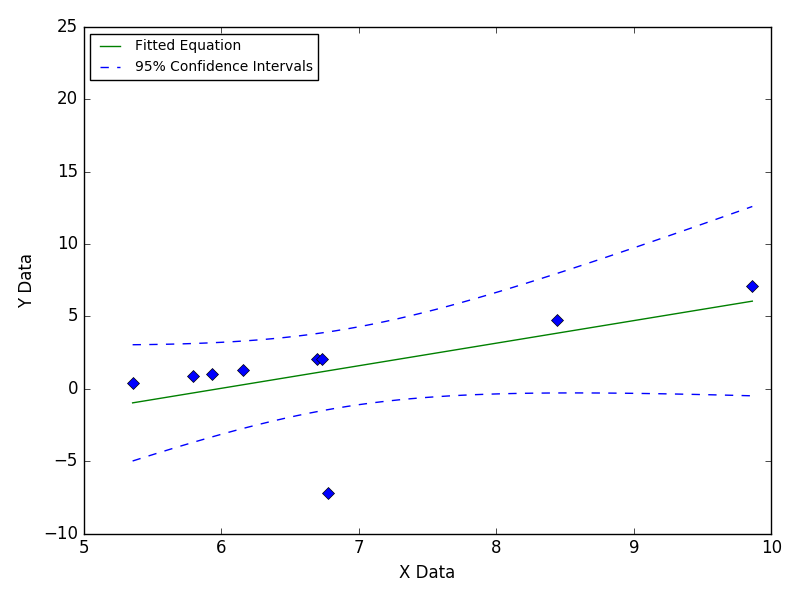

Single Outlier At Mid Point
Outliers are often caused by manual errors in recording experimental data.

Still Images



Outliers are often caused by manual errors in recording experimental data.



